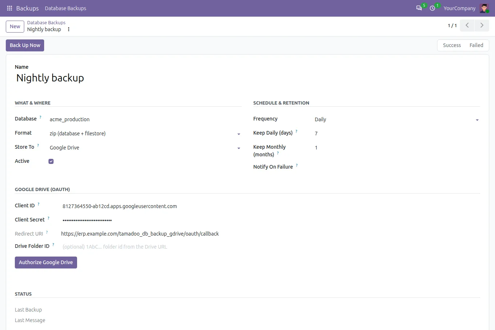
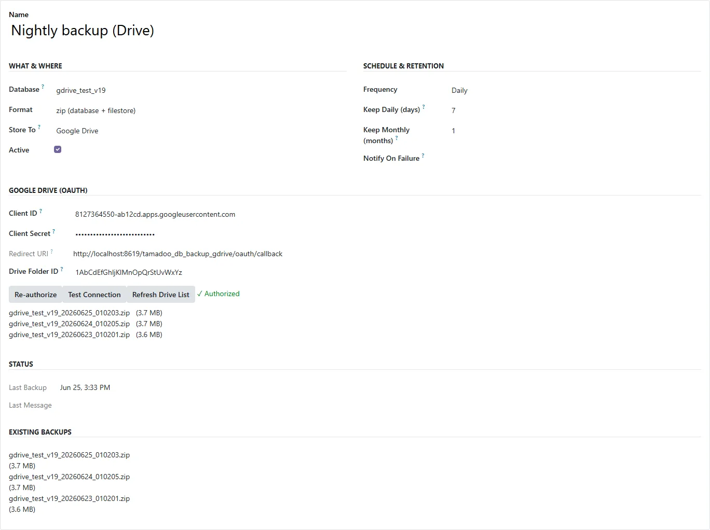

Google Drive Backup - Database Backup to Your Drive
Google Drive backup: send your scheduled auto backup of the database to your own Drive with one-click OAuth, no service-account keys. Add-on for Database Backup.
- Price
- Free
- Odoo versions
- 16.0
- 17.0
- 18.0
- 19.0
- 20.0
- Technical name
tamadoo_db_backup_gdrive- License
- LGPL-3

Text and screenshots below are from the Odoo 20.0 version of this module.
Push your scheduled backups to your own Google Drive — one-click OAuth.
What it does
Adds Google Drive as a destination for Tamadoo Database Backup. Authorize with your own Google account in one click — backups land in your Drive and use your Drive quota. No service-account JSON keys, no quota walls, works with a plain Gmail account.
- One-click OAuth authorization — no key files.
- Least-privilege
drive.filescope: the module only ever sees the backups it created. - Retention (keep N days + latest of each of M months) applied to the Drive folder too.
- Test Connection and Refresh Drive List from the form.
- No extra Python packages required.
How it looks
Paste your OAuth Client ID/Secret, copy the Redirect URI into Google, and authorize:

After authorizing: Test the connection, refresh the listing, and your backups appear in Drive:

Part 1 — Get your Google Client ID & Secret (one time, ~5 min)
The Client ID and Client Secret are two text
strings you generate for free in Google's console. A Client ID looks
like 8127364550-ab12cd.apps.googleusercontent.com; a secret like
GOCSPX-AbC1dEf2.... (The values in the screenshots above are
fake placeholders — you generate your own.)
Do this at console.cloud.google.com, signed in with the Google account whose Drive you want the backups in.
1.1 Create (or pick) a project
- Top bar → project drop-down → NEW PROJECT →
name it (e.g.
Odoo Backup) → CREATE. - Re-open the drop-down and select your new project.
1.2 Turn on the Google Drive API
- ☰ menu → APIs & Services → Library.
- Search Google Drive API → open it → ENABLE.
1.3 Set up the consent screen
(Newer console: “Google Auth Platform”. Older: “OAuth consent screen”. Same thing.)
- ☰ menu → APIs & Services → OAuth consent screen.
- App name (e.g.
Odoo Backup) + User support email (your email). - Audience / User type → External → Next, then fill contact email & accept.
- Make it permanent: on the OAuth consent screen, if Publishing status = Testing, click PUBLISH APP → confirm (→ In production).
⚠️ Important: while the app stays in Testing, Google deletes the
refresh token after 7 days and your backups stop. Publishing to
In production fixes this and needs no Google review with the
drive.file scope — you only click through a one-time
“unverified app” notice.
1.4 Create the OAuth client (gives the ID + Secret)
- ☰ menu → APIs & Services → Credentials.
- + CREATE CREDENTIALS → OAuth client ID.
- Application type → Web application; give it a name.
- Authorized redirect URIs → + ADD URI → paste the
exact value from Odoo's Redirect URI field (Part 2, step 4):
https://your-odoo-domain.com/tamadoo_db_backup_gdrive/oauth/callbackMust match character-for-character — same
https://, same domain, no trailing slash. - CREATE.
1.5 Copy the two values
The pop-up shows Your Client ID and Your Client Secret. Copy both (retrievable any time from Credentials → your OAuth client).
Part 2 — Configure in Odoo
- Install Tamadoo Database Backup and this add-on from Apps.
- Backups → Database Backups → New.
- Set a Name and Store To = Google Drive — the Google Drive section appears.
- Paste the Client ID and Client Secret. (Optional) a
Drive Folder ID (the part after
/folders/in a Drive URL; empty = My Drive root). Copy the read-only Redirect URI into Google (Part 1, step 1.4) if you haven't. Save. - Click Authorize Google Drive → pick your account → Allow → back in Odoo it shows ✓ Authorized.
- Test Connection → Connection OK. Then Back Up Now — the file uploads and appears in your Drive.
- Set Frequency + retention; the scheduler runs and prunes automatically.
Troubleshooting
| Symptom | Fix |
|---|---|
redirect_uri_mismatch |
The URI in the OAuth client must exactly equal the Odoo Redirect URI field — same scheme/domain, no trailing slash. |
| “No refresh token returned” | Revoke the app at myaccount.google.com/permissions, then click Authorize again. |
| Backups stop after ~7 days | The OAuth app is still in Testing — publish it to In production (Part 1, step 1.3). |
| “Access blocked: app not verified” | Expected for a personal app — click Advanced → Go to (app), or publish to production. |
Requirements
- Odoo 20 — Community or Enterprise.
- Tamadoo Database Backup (
tamadoo_database_backup) — the base engine. - A Google account and a free Google Cloud OAuth client (steps above).
Tamadoo · tama.odoo@gmail.com
Get Google Drive Backup
Questions before buying? Write to tama.odoo@gmail.com.